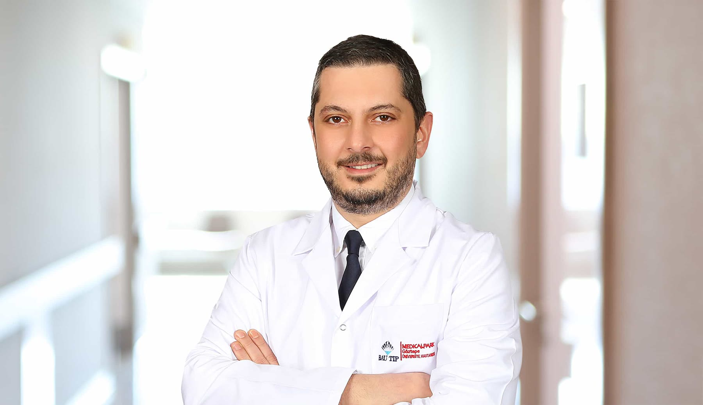

Prostat Hastalıkları
Prostat büyümesi, işeme şikâyetleri ve HoLEP başta olmak üzere tedavi seçenekleri.
3 rehberTümü
Üroloji · Medical Park Göztepe
Prostat büyümesi ve HoLEP, ürolojik kanserler, laparoskopik cerrahi ve böbrek taşı tedavileriyle ilgilenir. Hastalarını Medical Park Göztepe'de kabul eder.

Altı başlık altında 24 hastalık ve tedavi rehberi. Rehberleri Prof. Dr. Kaan Gökçen yazar ve güncel kılavuzlara göre gözden geçirir.
Prostat büyümesi, işeme şikâyetleri ve HoLEP başta olmak üzere tedavi seçenekleri.
Prostat, böbrek, mesane, testis ve böbreküstü bezi tümörlerinde tanı ve cerrahi tedavi.
Taşın boyutu ve yerine göre ilaç, şok dalgası ve kapalı lazer yöntemleri; yeniden oluşumu önleme.
Karında büyük kesi açmadan, küçük deliklerden kamerayla yapılan ürolojik ameliyatlar.
Kadın ve erkekte idrar kaçırma, aşırı aktif mesane ve gece idrara kalkma.
İnmemiş testis, hipospadias, reflü ve gece altını ıslatma gibi çocukluk çağı sorunları.
Klinik çalışmasının yanında laparoskopik cerrahi, taş hastalığı ve ürolojik onkoloji üzerine ulusal ve uluslararası yayınları bulunur. Aşağıdaki rakamlar yayımlanmış akademik kayıtlardan alınmıştır.

Tedavi seçimi muayene, görüntüleme ve laboratuvar bulgularına göre kişiye göre planlanır. Seçenekler, iyileşme süreci ve olası yan etkiler muayenede ayrıntılı olarak konuşulur.
Hekimi tanıyınKaynak: YÖK Akademik ve Google Scholar, Ekim 2026.
Aradığınız konuyu başlığa göre bulun. Her bağlantı ayrı bir rehber sayfasına gider.
Televizyon programları ve sağlık kanallarında hasta sorularına verilen yanıtlar.